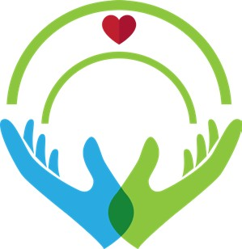

ISSN-PRINT 1794-9831 / E-ISSN 2322-7028
Vol. 18 Nº 3 / sep - dic, 2021 / Cúcuta, Colombia.
 https://doi.org/10.22463/17949831.3024
https://doi.org/10.22463/17949831.3024
ISSN-PRINT 1794-9831 / E-ISSN 2322-7028
Vol. 18 Nº 3 / sep - dic, 2021 / Cúcuta, Colombia.
https://doi.org/10.22463/17949831.3024
Resumen
Objetivo: Describir cómo viven y afrontan los profesionales de la enfermería la experiencia de cuidar personas con cáncer. Materiales y métodos: Cualitativo fenomenológico. El tamaño de la muestra se definió por la saturación teórica, conformada por seis profesionales de la enfermería que laboraban en oncología. El instrumento fue la entrevista a profundidad. Se mantuvo la reflexibilidad y también la credibilidad a través de una segunda entrevista para corroborar los datos interpretados. También se realizaron notas de campo y la relectura efectuada por investigadores asesores. Para el análisis de la información se empleó el método de Taylor y Bogdan; sus resultados se plasmaron en matrices de análisis y gráficos. Este estudio fue avalado por el Comité de Ética y se utilizó el consentimiento informado. Resultados: Se develaron dos temas centrales: el primero titulado “Qué tengo que vivir, qué tengo que hacer, con quien debo compartir” empleando mecanismos de afrontamiento desde el interior; y, el segundo “Hay otras formas para descargarnos” manejando mecanismos de afrontamiento desde afuera. Adicionalmente se generaron los siguientes subtemas: transformar el concepto de muerte, tener en cuenta ciertas características especiales, cambiar la forma de ver la vida, ser espiritual, reconocer la seguridad que ofrece el conocimiento científico y la experiencia laboral, recibir el apoyo institucional para el bienestar del trabajador y estimular la formación universitaria en el cuidado oncológico. Conclusión: La experiencia de cuidar a pacientes con cáncer develó mecanismos de afrontamiento que le permiten al enfermero adaptarse y resolver diversas situaciones en su quehacer profesional en los servicios de oncología.
Palabras claves Enfermería oncológica; adaptación psicológica; acontecimientos que cambian la vida; atención de enfermería.
Abstract
Objective: Describe how the nursing professionals live and cope with the experience of caring for people with cancer. Materials and methods: Phenomenological qualitative research. The size of the sample was defined by theoretical saturation, made up by six nursing professionals working in oncology. The instrument was an in-depth interview. Reflexivity and credibility were maintained through a second interview to corroborate the interpreted data. Also, field notes and a re-reading made by research advisors were carried out. For the analysis of the information the Taylor-Bogdan method was used; the results were visualized trough matrixes of analysis and graphs. This study was supported by the Ethics Committee and an informed consent was used. Results: Two central themes were revealed: the first one titled “What I have to live, what do I have to do, who should I share with” using facing mechanisms from the inside; and, the second one “There are other ways to relieve ourselves” using facing mechanisms from the outside. Additionally, the following sub-themes were generated: transform the concept of death, consider certain special characteristics, change the way of seeing life, be spiritual, recognize the security that scientific knowledge and work experience offer, receive institutional support for the well-being of the worker and stimulate university education for oncologic care. Conclusions: The experience of caring for people with cancer revealed coping mechanisms that allow the nurses to adapt and resolve diverse situations in their professional activities in the oncology services.
Keywords Oncology nursing; psychological adaptation; life changing events; nursing care.
Resumo
Objetivo: Descrever como vivem e afrontam os profissionais de enfermagem a experiência de cuidar pessoas com câncer. Materiais e métodos: qualitativo, fenomenológico. O tamanho da amostra definiu-se pela saturação teórica, conformada por seis profissionais de enfermagem que trabalham na oncologia. O instrumento foi a entrevista a profundidade. Manteve-se a reflexibilidade e também a credibilidade através da segunda entrevista para confirmar os dados interpretados. Realizaram-se também anotações de campo e a releitura pelos pesquisadores assessores. Para a análise da informação empregou-se o método Taylor e Bogdan; os resultados agruparam-se em matrizes de análises e gráficas. Esse estudo foi avaliado pela Comissão de ética e empregou-se o termo de consentimento informado. Resultados: Identificaram-se dois temas centrais: o primeiro, “O quê tenho que viver, o quê tenho que fazer, com quem devo compartilhar” empregando mecanismos de afrontamento desde o interior; e, o segundo, “Há outras formas para descarregarmos” utilizando mecanismos de afrontamento desde fora. Adicionalmente, geraram-se os seguintes subtemas: transformar o conceito de norte, ter em conta características especiais, mudar a forma de ver a vida, ser espiritual, reconhecer a segurança que oferece o conhecimento cientifico e a experiência laboral, receber apoio institucional para o bem-estar do trabalhador e a promoção da formação universitária no cuidado oncológico. Conclusões: a experiência de cuidar pacientes com câncer evidenciou mecanismos de afrontamento que lhe permitem ao enfermeiro adaptar-se e resolver diversas situações no seu papel profissional nos serviços de oncologia.
Palavras-chave Enfermagem oncológica; adaptação psicológica; acontecimentos que mudam a vida; cuidados de enfermagem.
Autor de correspondencia*
1* Enfermera.
Magister en Enfermería
Oncológica. Jefe de enfermería Clínica
Vida. Medellín, Colombia. Correo:
an-drea192x@hotmail.com,
Enfermera.
Magister en Enfermería
Oncológica. Jefe de enfermería Clínica
Vida. Medellín, Colombia. Correo:
an-drea192x@hotmail.com,  https://orcid.org/0000-0003-2210-8939 .
https://orcid.org/0000-0003-2210-8939 .
2 Enfermera.
Magister en Enfermería.
Docente Facultad de Enfermería.
Universidad Pontificia Bolivariana.
Medellín. Colombia. Correo:
dora.gi-raldo@upb.edu.co, https://orcid.org/0000-0003-0324-3975 .
Recibido: 8 mayo 2021
Aprobado: 19 agosto 2021
Para citar este artículo / To reference this article / Para citar este artigo: Giraldo-Montoya DI, Mesa-Marín A. Cuidar a personas con cáncer: vivencias desde el afrontamiento en enfermeros. Rev. cienc. cuidad. 2021; 18(3):32-42. https://doi.org/10.22463/17949831.3024

Introducción
El cáncer es una condición cada vez más frecuente y por ello es importante conocer a profundidad el impacto que éste genera en las personas que lo padecen y su familia, así como también en el personal responsable de su manejo, como son los profesionales de la enfermería, quienes tienen claro que su labor les ofrece muchas satisfacciones; no obstante, la situación de cuidado especial y crítico en la que están insertos hace que la incidencia del estrés sea mayor que en otras profesiones. El trabajo de un enfermero, en general, implica mucha responsabilidad, porque está en contacto permanente con los pacientes y sus familiares, atendiendo situaciones de dolor, entre otras problemáticas asistenciales u organizacionales (1, 2).
Diversos estudios se han centrado en el tema del estrés laboral y el síndrome del desgaste profesional; los mismos refieren que la profesión de la enfermería es, posiblemente, la más vulnerable a este tipo de problemas. El panorama en el contexto de los servicios oncológicos es más complicado, dado que los profesionales tienen bajo su responsabilidad el cuidado de personas vulnerables que atraviesan etapas difíciles, que van desde el conocimiento del diagnóstico y el tratamiento, pasando por la etapa de los cuidados paliativos hasta llegar a la muerte, cuando no logran salir adelante. La investigación de Zoubi et al. (3), refiere que los enfermeros de oncología tienen más estresores que los de otras unidades, dado que afrontan muchos desafíos, tanto dentro como fuera del entorno laboral, que les afectan negativamente. Así mismo Ghiyasvandian et al. (4), argumentan que los enfermeros que trabajan en los servicios de oncología se enfrentan constantemente a situaciones clínicas de alto estrés, tales como: el tratamiento a largo plazo, la difícil situación de los pacientes, los efectos secundarios de la quimioterapia, las cirugías que conducen a la pérdida, el sufrimiento y el dolor de los pacientes, el sentimiento de miedo y horror, para que finalmente se dé la muerte como desenlace.
Como puede apreciarse los enfermeros que tienen bajo su cuidado pacientes oncológicos están enfrentados en su diario vivir a situaciones extremas relacionadas con el sufrimiento y la muerte, las cuales deben ser manejadas con la calidad que se requiere; es decir, que se deben emprender estrategias de diversa índole que generen un impacto positivo en este contexto, en beneficio de los pacientes y de los enfermeros. Algunas de estas estrategias surgen de la misma persona y tienen que ver con su capacidad de afrontamiento la cual debe jugar un papel positivo, de tal manera que contribuya al buen desempeño como persona y profesional.
El afrontamiento es definido por Roy (5) como el conjunto de esfuerzos comportamentales y cognitivos que realiza la persona para atender las demandas del ambiente y que actúan como un todo para mantener sus procesos vitales y su integridad. La persona es un sistema abierto y adaptativo que utiliza una secuencia de entrada, procesamiento y salida. Se debe precisar que las personas se adaptan en relación con los estímulos internos y externos que las rodean y responden a los factores que les generan estrés de forma individual, por sus características cambiantes. Triviño y Sanhuea (6), por su parte, afirman que la capacidad de afrontamiento de una persona depende de su trayectoria personal y de los valores y las creencias que ha ido incorporando con los años. Hablar de un proceso de afrontamiento significa un cambio en los pensamientos y actos a medida que la interacción va desarrollándose; por tanto, el afrontamiento es un proceso en el que el individuo en determinados momentos debe contar principalmente con estrategias que le sirvan para resolver el problema, teniendo en cuenta que van cambiando a medida que se transforma su relación con el entorno.
Según varios estudios se ha conceptualizado el tema del afrontamiento desde una mirada cuantitativa y para ello se han utilizado escalas para su medición, como el Inventario de Estrategias de Coping de Folkman y Lazarus (7) y la escala de medición de afrontamiento y adaptación de Callista Roy (8). Estos instrumentos dan cuenta de las estrategias más frecuentes que los profesionales emplean, tales como: las dirigidas a la definición del problema, a la búsqueda de soluciones alternativas, implicando un objetivo; de igual forma, se emplea un proceso analítico dirigido principalmente al entorno y también las estrategias dirigidas al interior del sujeto. Por otro lado, se utiliza el afrontamiento de la emoción, el cual está constituido por los procesos cognitivos encargados de disminuir el grado de trastorno emocional e incluyen procedimientos como la evitación, la atención selectiva, las comparaciones positivas y la transformación en valores positivos a los acontecimientos negativos.
Teniendo en cuenta los planteamientos anteriores, es necesario ampliar la investigación en este campo, a partir de miradas cualitativas, para conocer con mayor profundidad la forma como viven los profesionales de la enfermería las situaciones que experimentan a diario en este contexto del cuidado. De igual forma, hay que ahondar en las estrategias y recursos que les ayuden a enfrentarlas. Es en este sentido, que la presente investigación busca responder a estos interrogantes para comprender de una manera más integral el problema; dicha experiencia es individualizada; es decir, las personas pueden enfrentar los mismos desafíos, pero los factores externos e internos influyen en su significado.
Objetivo general
Describir cómo afrontan los profesionales de enfermería la experiencia de cuidar a personas con cáncer en varias instituciones de salud de tercer nivel de complejidad en la ciudad de Medellín.
Materiales y métodos
Este es un estudio cualitativo fenomenológico que sirvió para describir cómo viven y afrontan los profesionales de la enfermería la experiencia de cuidar a personas con cáncer. El estudio se centró en las experiencias humanas, percibidas por el profesional de la enfermería y se trató de develar lo que estaba oculto. El enfoque que se trató de adoptar fue el de la fenomenología descriptiva de Husserl, con el fin de explorar la experiencia desde el punto de vista de los enfermeros.
La población estuvo conformada por seis profesionales de la enfermería que laboraban en servicios dirigidos a cuidar a pacientes con cáncer. La selección se realizó de manera intencionada. Consistió en buscar a propósito y escoger a personas de un grupo preespecificado, quienes reunieron los criterios de inclusión, los cuales fueron: profesionales de enfermería que laboraban exclusivamente en servicios de hospitalización oncológica, para adultos de tercer nivel de atención, de diferentes instituciones de salud de la ciudad de Medellín durante el año 2019.
El tamaño de la muestra se definió por la saturación teórica, punto en el cual no se hallaron datos nuevos en relación con los objetivos de investigación. El instrumento utilizado fue la entrevista a profundidad, estructurada en torno a un gran interrogante que invitó al profesional para que hablara de su experiencia de cuidar personas con cáncer. Las entrevistas fueron grabadas en su totalidad para asegurar la fidelidad de los datos obtenidos y así poder realizar su posterior análisis en torno a la experiencia completa. Las investigadoras contaron con una libreta en la cual tomaron las notas relacionadas con expresiones particulares, gestos, posturas importantes, silencios, risas, lágrimas, elementos que sirvieron para completar el análisis. Para poder comprender ampliamente el fenómeno de estudio y garantizar la credibilidad, se llevaron a cabo dos entrevistas por cada participante, con una duración aproximada de una hora.
De igual forma se realizaron ejercicios de reflexibilidad antes de iniciar la recolección de la información y en general, durante todo el proceso investigativo. Estos datos se obtuvieron a través de un autoexamen de las vivencias personales que habían tenido las enfermeras con sus pacientes, para evitar que esas experiencias pudieran influir en el análisis de la información proporcionada por las informantes. Para lograr el rigor metodológico, se efectuó la lectura y relectura del material con la colaboración de investigadores asesores, quienes lo revisaron en conjunto con las investigadoras, para alertar si surgían percepciones que apuntaban más a juicios personales que a un análisis de los significados de las informantes. Durante la formulación del estudio, se trató de evitar el profundizar sobre teorías preconcebidas en la literatura acerca del afrontamiento. Hay que precisar que las informantes laboraban en servicios oncológicos ajenos a las investigadoras; es decir, las autoras no conocían las áreas donde se captaron a las informantes y tampoco fueron compañeras de trabajo. Antes de iniciar las entrevistas, los asesores investigativos, pidieron a las investigadoras que se hicieran un autoexamen de sus propias vivencias como enfermeras a través preguntas relacionadas con el cuidado de los pacientes, esto permitió reflexionar sobre las percepciones propias y vivencias que pudieran afectar el análisis frente al fenómeno de estudio.
Hay que mencionar además que el estudio fue aprobado por el Comité de Ética de Investigación en Salud de la Universidad Pontificia Bolivariana en el año 2018; también contó con el consentimiento informado y escrito de las informantes. Del mismo modo, se protegió la privacidad, por tanto, el instrumento no tuvo la identificación de las participantes. Por otra parte, la prueba piloto se centró no sólo en la forma de realizar la entrevista sino también en la información aportada por la profesional, objeto del análisis cualitativo; igualmente, se efectuó con una participante que reunió los criterios de elegibilidad. Asimismo, se captó a las profesionales mediante una llamada telefónica, se les explicó el fin de la investigación, así como su aporte y la metodología utilizada. El día de la entrevista, se le solicitó su consentimiento informado por escrito.
De igual forma, se realizaron tres fases para el análisis de la información, las cuales se basaron en el método descrito por Taylor y Bogdan (9). En la primera se leyeron repetidamente los datos, las notas de campo, los audios y las transcripciones, de esta manera se identificaron temas plausibles, se anotaron al margen o se subrayaron como temas emergentes de interés. En la segunda fase se efectuó la codificación de los datos y la selección de los temas que iban emergiendo, siguiendo la pista, analizando las intuiciones, las interpretaciones y las ideas conjuntamente con los investigadores y asesores. En la tercera fase se trató de comprender los datos en el contexto en que fueron recogidos; es decir, se identificaron los temas emergentes que dieron cuenta de los significados.
El proceso analítico terminó con la reconstrucción de los datos, para que éstos se pudieran conocer. Seguidamente, se procedió al análisis del fenómeno objeto de estudio, en función de dos temas centrales y varios subtemas, los cuales sirvieron para determinar los resultados y así explicar las relaciones que sirvieron para comprender el contenido de los aportes dados por los informantes.
Resultados
En total fueron seis participantes, todos de género femenino. Observe la tabla 1.
Durante el análisis de la información, se develaron dos temas centrales: 1. “Qué tengo que vivir, qué tengo que hacer, con quien debo de compartir”: mecanismos de afrontamiento desde el interior; y, 2. “Hay otras formas para descargar- nos” mecanismos de afrontamiento desde afuera. Para cada tema se despliegan varios subtemas los cuales se observan en la Figura 1.
Tema 1. “Que tengo que vivir, que tengo hacer, con quien debo de compartir”: mecanismos de afrontamiento desde el interior
Este tema considera que los mecanismos de afrontamiento desde el interior son propios del enfermero/a, que surgen desde su trayectoria o experiencia laboral, sus cualidades individuales, sus creencias y valores que se han ido transformando e incorporando con los años y los conocimientos científicos adquiridos por cuenta propia. A continuación, se despliegan los subtemas:
Transformar el concepto de muerte: Los profesionales de la enfermería que atienden a pacientes oncológicos están enfrentados en su diario vivir a situaciones extremas relacionadas con la muerte. En un principiante la muerte genera miedo, pero con la experiencia, el concepto cambia y se transforma en algo trascendente que le permite ver la muerte como una oportunidad para que el paciente y su familia puedan resarcir el pasado. Cuando se transciende el concepto de la muerte, se convierte en una experiencia que ayuda a confrontarse a sí mismo y a sacarle provecho para mejorar el cuidado al final de la vida y se puede ver al paciente terminal de una forma diferente y de manera positiva; de igual manera se aprende, que no le puede afectar su vida.
“Algo que aprendes, la muerte es una forma de sanar por duro que suene, cuando usted intenta explicarle eso a las familias puede que sea muy insensible, pero usted al conocer el proceso de muerte, le permite elegir como usted quiere pasar sus últimos días. (…) no es que uno no le importe el dolor del otro, le importa mucho, pero empieza a verlo como algo que no afecta su vida” (D1).
“No entendía, quizá uno no estaba como tan movido por la muerte y tantas cosas, pues uno lo veía de otra manera, pero ahora la percepción es diferente, a uno le cambia totalmente la manera de ver el sufrimiento, de ver la enfermedad” (P5).
“Es que uno en este ámbito empieza a verla diferente, ya no la veo como antes que era como miedo, antes la muerte me daba miedo” (L4).
Tener características especiales: Características tales como: ser sensibles con relación al sufrimiento, mostrar interés por el dolor del otro, tener inteligencia emocional para equilibrar las cargas, saber hasta dónde entregarse, ser capaz de relacionar la teoría con la técnica y la emoción, son cualidades necesarias para sobrellevar la fuerte carga emocional que se genera en el cuidado de los pacientes con cáncer.
“Las personas que trabajan con pacientes con cáncer tienen que tener características especiales y a eso me refiero, es a tener sensibilidad, pero usted no puede ir por ahí sin importarle el dolor de otro y menos cuando el otro tiene cáncer” (D1).
“Tener inteligencia emocional te va a ayudar demasiado a liberar esas cargas y en el día a día a cómo actuar con cada paciente y con cada familia cierto (…) hay que equilibrar las cargas y hay que tener un equilibrio con los pacientes, tú te entregas, pero también tienes que saber hasta dónde entregar” (A6).
“Es fundamental relacionar la parte teórica, la técnica y la parte emocional de cada enfermero, porque si tú no tienes unos adecuados fundamentos, pues va a tener un afrontamiento un poco más débil, si no tienes clara la situación de ese paciente, hasta puedes confundir al paciente y a la familia, entonces es muy importante la relación de teoría, practica y la parte emotiva” (P5).
Cambiar la forma de ver la vida: desde esta perspectiva se identifica una transformación a nivel profesional y personal, se aprende a cambiar de actitud y forma de ser e incluso se logra una mejor comunicación con los pacientes; es decir, que se aprende a valorar la vida y la familia. Al compartir las experiencias vividas con los otros sirve para sensibilizarlos y mostrar que hay situaciones más difíciles que los propios problemas. El cambio de actitud y la forma de comunicarse con el paciente son herramientas claves para encontrar en el cuidado de la enfermería una experiencia gratificante.
“Ha influido de forma positiva, uno aprende a cambiar en la actitud, en la manera de ser, quizás yo era una persona más arrogante, más dura y todas estas situaciones le mueven el corazón, pues uno cambia muchas, muchas cosas de la manera de ser de uno; las actitudes, la forma de expresarse incluso hasta como llegar y hablarles a los pacientes” (G2).
“Pero uno aprende mucho de ellos, uno aprende a valorar la vida y a valorar no las cosas materiales, sino la familia, la familia es algo que aquí uno aprende a valorar demasiado, esos pequeños momentos con esas personas que uno quiere, uno aprende todos los días en que uno debe estar mucho con la familia” (S3).
“Es bueno uno desahogarse y también a veces de compartir las vivencias, también para sensibilizar a los otros, pues demostrar que la vida hay cosas más duras, que hay situaciones y familias que tienen dificultades más difíciles que las que uno pueda tener” (L4).
Ser espiritual: La espiritualidad aportó al profesional la esperanza, la tranquilidad y la seguridad en el cuidado de los pacientes. Las sensaciones o energías negativas vivenciadas en los servicios de oncología cambian con el tiempo y le permite ver sus experiencias de manera diferente a través de la espiritualidad y el amor. La oración grupal o encender una luz fueron acciones que enriquecieron la espiritualidad para mantener la serenidad, la tranquilidad y la paz.
“Yo creo que la espiritualidad, es que todos creemos en algo, en un ser supremo, yo creo en Dios y muchos de los pacientes que uno trata creen en Dios, pero también hay gente que muestra la espiritualidad como lo que lo lleva a usted a creer y a tener esperanza” (D1).
“Cuando empecé en oncología en hospitalización, el servicio es muy tétrico, es muy encerrado; sentí una energía muy pesada, yo pensaba que era como una energía negativa, después es mágica porque permite crecer en todos los aspectos de la vida y en el aspecto más importante que es el espiritual, por eso digo que es algo mágico, porque ellos te enseñan todos los días qué es lo verdaderamente importante en la vida, que el amor es fundamental para todo” (P5).
“La agonía de un paciente me generó miedo y angustia y me puse a rezar con las muchachas, me sentía maluca entonces, prendí una velita y lo otro que yo siempre hago cuando los pacientes fallecen es que les hago una oración…… eso da tranquilidad, da seguridad. La oración ayuda en cualquier momento, da tranquilidad, da seguridad, en su quehacer y en su entorno” (L4).
La seguridad que ofrece el conocimiento científico: el conocimiento científico aporta ideas en la toma de decisiones para el cuidado, para vencer el miedo y sacar adelante el servicio. Los profesionales de la enfermería, llegan a las áreas de oncología sin el conocimiento científico, lo que les genera temor y se les hace difícil enfrentar los retos que tienen que ver con los adelantos científicos y los avances en el cuidado del paciente con cáncer. Por iniciativa propia se busca estudiar más y buscar oportunidades de conocimiento en esta área específica.
“Empecé nula de conocimiento, yo no sabía absolutamente nada de oncología y a mí me hablaban de una quimioterapia y yo quería me “tragara la tierra” (P5).
“Necesito estudiar, pues la mejor forma de vencer los miedos y poder sacar adelante el servicio es estudiando y tener conocimientos para poder continuar, entonces hice el diplomado de oncología, me ayudó muchísimo porque ya no se siente temor cuando vas a instalar una quimioterapia” (S3).
“Empezó como un reto porque yo no sabía nada de estos pacientes, de hecho, hasta el momento, yo no he estudiado nada en hematología ni oncología, todo lo he ido aprendiendo acá y por iniciativa propia uno va estudiando” (L4).
La seguridad que ofrece la experiencia laboral: la experiencia laboral tiene un gran impacto para afrontar diversas situaciones en el cuidado del paciente con cáncer, dado que es más fácil reconocer qué se debe hacer cuando se tiene una trayectoria en el cuidado específico de estos pacientes. Igualmente aporta al crecimiento profesional y personal, porque ofrece un mayor control de las emociones. Tener la experiencia con varios pacientes, permite familiarizarse con el tema sobre el final de la vida y a manejar mejor a los pacientes.
“Lo que pasa es que uno va creciendo no solo personalmente sino profesionalmente en la medida que va teniendo más pacientes, vas cogiendo experiencia y uno va creciendo en la parte profesional” (L4).
“Con el tiempo laboral uno controla un poquito más las emociones y como vive en ese mundo donde los pacientes fallecen, recaen, entonces digamos que, uno va aprendiendo a familiarizarse con el tema y a manejar mejor a los pacientes” (S3).
“Para mí la experiencia, el tiempo que se tiene en los servicios oncológicos ayudan a afrontar mejor, a medida que va pasando el tiempo en el servicio es más fácil controlar más las emociones y las situaciones que se pueden presentar” (A6).
Tema 2. “Hay otras formas para descargarnos” mecanismos de afrontamiento desde afuera.
Los mecanismos de afrontamiento desde afuera que se despliegan en este apartado son aquellos que adquiere el enfermero en su entorno y tienen que ver con el apoyo institucional y la formación que se recibe a nivel universitario.
El apoyo institucional para el bienestar del trabajador: el apoyo institucional es fundamental para mejorar el afrontamiento, sobre todo cuando existe un escaso apoyo en lo que respecta a la falta de personal de enfermería, de tiempo para el esparcimiento y ausencia de redes de apoyo. En este sentido los profesionales de la salud manifiestan la necesidad de que se les tenga en cuenta a partir de la motivación y la recreación; además, hay que aumentar el personal, disponer de redes de apoyo y manejo emocional para liberar cargas y mantener su bienestar integral en estas áreas.
D1: “Pienso que el personal que trabaja con pacientes oncológicos es un personal que debería ser como más tenido en cuenta, más motivado por lo mismo; porque son personas que se llenan de cargas de sentimientos, de tristezas y darles como más tiempo de esparcimiento. El hecho de nosotros estar expuestos a una quimioterapia y tanta cosa son muchos riesgos; pues riesgo a nivel de la salud, riesgo psicológico, son muchas cosas”.
G2: “Yo pienso que hace falta más personal porque uno a veces no tiene el tiempo suficiente para dedicarles, muchas veces uno no los puede escuchar como quisiera, entonces la cosa es la falta de personal”.
A6: “Yo pienso que las instituciones que trabajen con pacientes oncológicos deberían tener red de apoyo y espacios o actividades de esparcimiento para el personal que está en la unidad de cancerología o en una unidad de hospitalización con pacientes hematoncológicos”.
La formación universitaria en el cuidado de pacientes con cáncer: Las informantes refieren que, durante la formación universitaria, no se cuenta con la preparación necesaria para el cuidado y el manejo de las emociones y sensaciones que se derivan de la muerte de un paciente. Se evidencian vacíos especialmente en cómo afrontar la muerte de sus pacientes, dado que solo se las prepara para cuidar y salvar vidas, pero nunca se les enseña para el cuidado al final de la vida de un paciente.
“Uno cuando está en la universidad no le enseñan casi del cáncer, pues en el pregrado yo solo vi como una clase de dos horas” (D1).
“A uno nunca lo preparan para la muerte, para cuidar en la muerte, a usted lo preparan para cuidar, para salvar, para intentar salvar la vida en el proceso de enfermedad y de recuperación, pero poco le enseñan a uno a cuidar para el buen morir” (S3).
“Porque a uno no lo preparan para la muerte de nadie y menos en la universidad, pero trabajar con cáncer le enseña a usted eso, le enseña a tener una visión diferente” (P5).
Discusión
En el presente estudio, las participantes informan sobre una serie de medidas para hacerle frente a los retos que plantea el cuidado de los enfermos con cáncer; además, cuentan con mecanismos de afrontamiento internos y externos que les permiten un sano proceso de adaptación para dar respuesta a los desafíos en su práctica profesional y prevenir el desgaste emocional. También, se muestra cómo el proceso de afrontamiento está sujeto al cambio de acuerdo con las condiciones del entorno (10). De manera similar, los resultados del estudio realizado por Di Giuseppe y Ciacchini (11), refieren que los estilos de defensa positivos o negativos que utilizan los profesionales en un servicio de oncología tienen que ver con la habilidad de estar atentos y conscientes de la experiencia del momento presente y están fuertemente relacionados con un estilo de afrontamiento maduro o inmaduro y las características psicológicas propias del profesional.
De igual manera, los participantes presentaron mecanismos innatos o adquiridos para actuar ante los cambios producidos en el entorno. Se Han descrito los mecanismos internos, como aquellos que son inherentes al ser del enfermero y que expresa a través de sus creencias, su experiencia laboral y sus conocimientos para cambiar de manera positiva las diversas situaciones vivenciadas en el servicio de oncología. En cambio, los mecanismos externos o adquiridos se crean y ejecutan por medio de la adquisición de conocimientos y el apoyo institucional donde laboran. Según el artículo de Da Silva et al. (12), la persona se enfrenta a cambios constantes del medio ambiente que afecta el desarrollo y comportamiento, a los que emite respuestas adaptativas. En este contexto aparecen mecanismos de afrontamiento innato y adquirido para enfrentarse a los agentes estresantes; igualmente, están inmersos en un ambiente constituido por sus creencias, valores, principios, vivencias y patrones de relación, que determinan la forma como el individuo se enfrentará a los estímulos del medio.
Por otro lado, los mecanismos de afrontamiento relacionados con el cuidado del final de la vida y el proceso de muerte en el paciente oncológico es un campo vulnerable, no solo para la persona que sufre la enfermedad sino también para su familia y los profesionales de la enfermería. La literatura evidencia que enfrentar la muerte de un paciente incluye afrontar el dolor, la agonía, el sufrimiento, así como el duelo de su familia. Estos factores inciden en los sentimientos percibidos por los enfermeros y repercuten en su vida profesional, laboral y social, al producir ansiedad e incertidumbre (13). Los resultados del presente estudio develan que la muerte repercute en la vida personal de los enfermeros, pero a pesar de ello aprenden a reconocerla como un proceso vital e inevitable de la vida del ser humano. Esto se logra con la experiencia que va cambiando y transformando el concepto de muerte, convirtiéndose en una herramienta que ayuda a mantener la distancia y a evitar el propio sufrimiento. Esta misma situación se plantea en el estudio de Cibanal (14) en su libro “Técnicas de comunicación y relación de ayuda en ciencias de la salud”, en donde se recalca que para cuidar a los pacientes agonizantes, el profesional de la salud debe aceptar y reconocer su propia mortalidad y examinar el significado personal de la muerte. Vivencia que varía gracias a las experiencias vividas con los pacientes al final de la vida y a la transformación de su percepción de la muerte como algo que le da herramientas para ver este aspecto de la vida de una manera más tranquila. Al respecto, Peters et al. (15), demostraron que las enfermeras generalmente tenían actitudes positivas hacia la muerte, logrando sobrellevar el cuidado de los pacientes moribundos, mediante la trasformación de su concepto frente a la muerte.
Se debe precisar que para el afrontamiento de situaciones difíciles es necesario tener características especiales que mejoren la relación con el paciente y que a su vez sean una herramienta para generar satisfacciones personales y profesionales. Acerca de este tema, Leocadie et al. (16), demostraron que los cuidadores desarrollan habilidades específicas y esenciales para promover la seguridad y la atención de calidad. Desde otro punto de vista, Kamisli et al. (17), encontraron que las habilidades requeridas fueron: paciencia (60%), empatía (57,1%) y experiencia (50%). En cambio, Marilaf et al. (18), en su estudio sobre empatía, soledad, desgaste y satisfacción en enfermería, probaron que la empatía es un factor protector que previene la soledad y el agotamiento laboral; esto supone, que los profesionales más empáticos presentan un mayor control emocional, lo cual se ve reflejado además en otros aspectos de su vida en relación con: el trato a los pacientes, la capacidad de sobrellevar la carga emocional que dicho trabajo supone, el desarrollo de sus relaciones sociales y una menor percepción de soledad, junto a una visión más optimista y real frente a la vida. La amabilidad y la franqueza también son actitudes sugeridas en el estudio de De La Fuente et al. (19). Por su parte Duarte y Pinto (20), comentan que la empatía es una característica central de la relación paciente-profesional de la salud y se asocia con una mayor satisfacción del paciente.
Algo semejante ocurre en los servicios de oncología donde se generan sensaciones o energías que son manejadas desde la espiritualidad, que se concretan en actos como la oración, permitiendo a la enfermera tranquilizarse en momentos de estrés y le da seguridad y tranquilidad. Para López et al. (21), la espiritualidad es una cualidad íntima y propia de cada persona, constitutiva del ser humano, una aspiración profunda por adquirir una conexión con todo lo que le rodea, pues necesita dar sentido a su existencia y al mundo en el que vive. Por su parte, los investigadores Rosado y Varas (22) identificaron como estrategias de manejo el recurso de la fe y la espiritualidad, siendo también una de las más utilizadas por las participantes para afrontar las pérdidas físicas de los pacientes. De acuerdo con las enfermeras, estas estrategias son métodos efectivos para manejar los aspectos emocionales de su profesión. Por otro lado, en el estudio de Henao y Quiñonez, se concluyó que entre los recursos más utilizados por las enfermeras desde el componente espiritual, es la oración (13).
Como se ha dicho, el conocimiento científico que posee la enfermera se considera como una base o pilar para afrontar las experiencias estresantes de sus pacientes; es una herramienta que facilita la toma de decisiones y la mantiene actualizada con los adelantos científicos. Al mismo tiempo, el conocimiento le permite vencer los miedos y actuar con seguridad en los momentos difíciles, ofreciendo argumentos basados en la evidencia y actuando profesionalmente con el equipo de trabajo. De igual modo, se ha demostrado que las enfermeras bien capacitadas, que tienen conocimientos científicos y se actualizan regularmente, pueden desempeñarse con eficacia en su papel vital de cuidar y educar a los pacientes con cáncer, lo cual disminuye la carga de angustia frente a la toma de decisiones en muchas situaciones complejas desde el punto de vista patológico, el tratamiento y el pronóstico. De acuerdo con Lledó y Bosch los profesionales encuestados demandan una mayor formación sobre cuidado al final de la vida para mejorar su afrontamiento (23).
Otro rasgo a tener en cuenta, es que la experiencia laboral del profesional de la enfermería impacta de manera positiva en la forma de afrontar el cuidado de pacientes con cáncer, dado que la pericia le ayuda a resolver las situaciones complejas que presentan sus pacientes y le da un amplio campo de posibilidades en la toma de decisiones y en la priorización de las necesidades del paciente; esto le permite el desempeño ágil bajo factores estresantes y le da la posibilidad de estar más seguro. Se ha demostrado que los enfermeros más experimentados aprenden a manejar los factores de estrés emocional y dan respuestas de afrontamiento más eficaces. También se ha probado que los profesionales con más capacitación y mayor experiencia tienen una mejor comunicación con los pacientes y las familias, lo que favorece un ambiente agradable (19).
Además del desarrollo profesional, el/la enfermero/a reconoce que la experiencia de cuidar personas con cáncer le enfrentan a retos personales en donde identifican el sufrimiento como una oportunidad para transformar o modificar su yo personal y profesional, lo que les permite abrazar su sufrimiento y valorarlo en lugar de descartarlo. De su parte, Liu y Chiang (24) reconocen que los enfermeros son vulnerables al sufrimiento, pero pueden enfrentarse verdaderamente al ser interior y alimentar la pasión en el cuidado. Los profesionales de la enfermería reconocen el impacto positivo que trae a su vida el convivir diariamente con situaciones difíciles, pues les permite reflexionar y valorar sus condiciones actuales, para disfrutar de su vida al sentirse afortunados. Al mismo tiempo, ven las oportunidades y los espacios en familia como alternativas para disipar la carga emocional y cambiar la forma de ver la vida. En este sentido, Piotrkowska en su estudio, encontró que existe una relación significativa entre el nivel de satisfacción con la vida de las enfermeras en oncología y su edad, antigüedad laboral, sis- tema laboral y vida familiar (25).
Por otro lado, en su estudio Gillman et al. (26), presentan una serie de estrategias para preparar mejor a las enfermeras para la práctica y mantener su bienestar, dado que las experiencias de vida de sus pacientes las confronta con su vida propia, pero también pueden alterar su bienestar. En nuestro estudio, las estrategias prácticas que contribuyen al bienestar de la profesional son: los espacios de esparcimiento, proporcionarles educación y capacitación para desarrollar comportamientos que les ayuden a controlar o limitar la intensidad del estrés, crear redes de apoyo y aumentar el personal para el manejo adecuado del tiempo. Sumado a ello Yu et al. (27), realizaron un estudio donde demuestran que trabajar con personas que sufren, puede ser beneficioso para confrontar a los profesionales y generar bienestar. Tales beneficios se definen como satisfacción por compasión o satisfacción compasiva que incluye sentimientos positivos para ayudar a los demás, encontrar sentido en los esfuerzos que se hacen y realizar un trabajo en equipo que sea positivo.
Cabe señalar que los profesionales de la enfermería identifican como hábitos adecuados de salud, el ejercicio regular y las actividades recreativas como herramientas que contribuyen a disminuir el nivel de agotamiento y estrés generado a nivel laboral (28). Así lo expresan de Gillman et al. (26), al afirmar que estas actividades permiten el desarrollo de habilidades de afrontamiento y resiliencia efectivas, asociándose con una mejor salud y bienestar para las enfermeras, la continuidad en el trabajo y una mejor calidad de la atención al paciente.
Otro elemento a tener muy en cuenta es el apoyo institucional que influye de manera decisiva en el proceso que vive el enfermero en su día a día, relacionado no solamente con la carga que genera cuidar a los pacientes, sino también con el trabajo. Al respecto Diaw et al., refieren que los enfermeros no se sintieron adecuadamente apoyados ni por sus supervisores ni por la administración del hospital y mencionan la falta de una estructura formal o supervisión que los apoye en lo que ellos llaman la “carga de cuidar” (28). El factor falta de tiempo se utilizó para explicar que no se cuenta con el tiempo suficiente para brindar un cuidado individualizado basado en las necesidades de cada paciente por la alta carga laboral del servicio. Estos limitantes se deben tener presentes puesto que son áreas de alta complejidad, por las demandas administrativas, los procesos asistenciales y el acompañamiento constante tanto a pacientes como a familiares y a auxiliares de enfermería; por tanto, el tiempo se ve limitado para satisfacer las demandas establecidas durante la jornada laboral; factores que son referidos igualmente por Charalambous et al. (29). De su parte, Soheili et al. (30) sugieren que las políticas organizativas deben apoyar la prestación de cuidados y los proveedores de cuidados; satisfacer sus necesidades financieras, educativas y las relacionadas con la salud; de igual forma, hay que minimizar los problemas relacionados con el trabajo, como la escasez de personal y las largas horas de trabajo.
Por todo lo expuesto anteriormente, los profesionales de la enfermería reconocen el vacío que genera el egresar del pregrado con conceptos poco claros acerca del área oncológica, pues lo identifican como una dificultad al momento de enfrentarse al mundo laboral el cual requiere de enfermeros capacitados y competentes. Los/as enfermeros/as deben confiar en sus conocimientos, competencias y habilidades técnicas para que puedan desempeñar este papel de manera efectiva. Esta confianza no solo debe proceder de la experiencia clínica, sino también de la formación y la investigación (30). Así mismo, los profesionales de la enfermería oncológica deben capacitarse específicamente en la comunicación y en la provisión de apoyo psicoemocional a los pacientes. En su estudio Soheili et al. (30), confirman que los participantes insistieron en la carencia de cursos especializados de enfermería oncológica y que es necesario el establecimiento de asociaciones científicas de enfermería oncológica que diseñen y ofrezcan dichos cursos para mejorar los conocimientos y las habilidades en esta área.
Conclusiones
Conflicto de Intereses: Las autoras declaran no tener ningún conflicto de intereses.
Financiamiento: Las autoras declararon haber recibido apoyo financiero para la investigación por El Centro de Investigación para el Desarrollo y la Innovación CIDI de la Universidad Pontificia Bolivariana.
Referencias